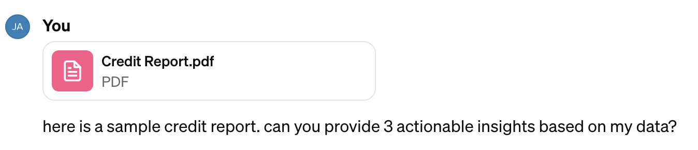

Experimenting with AI
Last updated: February 24, 2024
AI's applications far exceed funny poems and AI-generated Seinfeld episodes.
My journey into AI
I’ve always been an early adopter of new technology. In 2013, I bought my first Bitcoin from my college dorm room. When it comes to AI, my initial exposure happened by chance – I was listening to an a16z podcast at the gym where the guest spoke of a new wave of “Artificial Intelligence” companies. At the time, they made a convincing argument that AI wasn’t a fading fad, but an enduring trend in its early days. This piqued my curiosity.
I gained practical firsthand AI experience while working as a PM at BlackRock. Our internal Financial Modeling Group developed several ML models for institutional portfolio management and trading use cases. Seeing the models accurately predict trading behaviors was a magical “aha!” moment for me. This was the turning point — I was hooked.
Fast forward to now. I am an early product hire at StellarFi, working to make consumer credit universally accessible. Since my BlackRock days, I haven’t had the opportunity to work directly with AI as part of my day-to-day job. Enter 2022 and the emergence of ChatGPT.
AI and Haikus
When ChatGPT arrived in the fall of ‘22, it immediately captivated the masses, myself included. While many loved the poems and AI-generated Seinfeld episodes, I felt the real story was unfolding in Fintech. Suddenly, a powerful language model wasn't just generating funny haikus, it now had the potential to push fintech in a new and exciting direction. I wasn't interested in parlor tricks; I saw the potential to push the industry in an innovative direction, to truly innovate beyond incremental tweaks. This wasn't just another tool. It was a potential game-changer, a force waiting to be harnessed. And I was ready to dive in.
Beyond jest and verse,
Fintech's potential unearthed,
A new era's birth.
Fintech and AI: A Promising Alliance
Forget the fluff about "exciting use cases" and "potential”. There are real-world applications of AI in fintech today. Some examples:
However great these solutions, I still had an itch I couldn’t scratch. Doing research, I couldn’t find a true application of AI in a consumer-facing fintech product. Specifically with my work at StellarFi, I was interested in credit-building for US consumers. Nothing was out there, and one thought kept burning: could an LLM unlock truly personalized credit report insights and actionable advice? This led me to experiment with language models to uncover their capabilities.
Experimenting with ChatGPT
Inspired by a helpful primer for product people entering AI, I began by inputting my credit report data into ChatGPT. Here's a fictional example of some of the data:
{
"fullName":
"Fictional
James",
"creditScore": 762,
"recentInquiries":
2,
"openCreditLines": 5,
"totalAvailableCredit":
30000
}
Initial Prompt and Output
I got started on crafting a prompt to gather insights from ChatGPT. Here’s the first iteration:
Me:

Output from ChatGPT
This is pretty good! You can see the model is taking my credit data as input and outputting actionable insights for improvement. Even still, there is too much fluff. And some to be desired with its tone.
Refined Prompt and Output
In a number of minutes, I was able to get something workable:
The main challenge was that it required substantial fine-tuning and repeated re-prompting to get the desired output. This iterative approach clearly isn't scalable.
Enter Custom GPTs
Just as I was exploring these possibilities, OpenAI introduced custom GPTs.
Using the new custom GPT creator, I was able to feed the LLM a new system message. With this, I was able to reliably recreate the above results without having to re-prompt and re-tune the model continuously. Pretty cool!
What’s even cooler is that I can even “chat” with my credit report. I can ask it general questions (”How is VantageScore 3.0 calculated?”) and also apply them to my situation personally (”And what might you suggest for me to improve mine?”)
Future Applications: Leveraging GPT-4 via API
While fun, my initial forays were more of a thought exercise than impactful solutions. The real power will come with accessing GPT-4 via API. Pouring through the official API docs, it’s clear the API offers a much higher degree of customization and fine-tuning compared to the standard ChatGPT consumer-facing product.
Some examples:
- Tailored responses based on specific financial contexts.
- Integration with databases for capture and historical retrieval.
- Enhanced performance and cost-savings.
Final thoughts
When I first started experimenting with ChatGPT at the end of last year, I was initially entertained by the amusing poems and stories it produced. But the more I explored customizing the model outputs, the more potential I glimpsed for using this technology to meaningfully help people. This side project applying AI to personal finance and credit reports got me genuinely excited about the future of fintech. I'm still only one guy experimenting with these tools solo, but I can’t help feeling like I’m seeing the seeds of something significant. Who knows where this will lead for me, or what the wider reverberations might be in the future. But I’m eager to keep learning to see where this AI journey takes me.